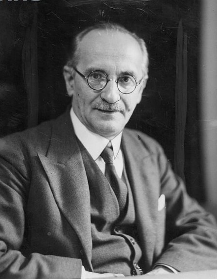
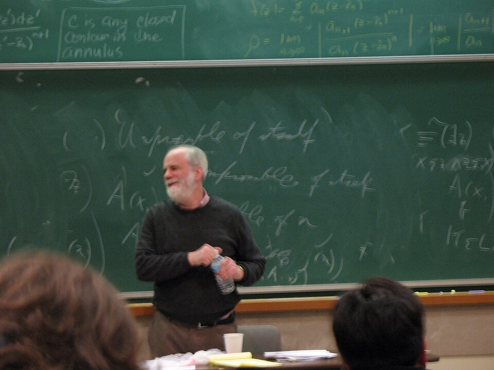

◇◻

Trinity College Dublin
Coláiste na Tríonóide, Baile Átha Cliath
The University of Dublin
LIU33008 · Semantics II
Week 2
Worlds, Intensions & Modal Logic
Dr. Thomas Stephen
School of Linguistic, Speech & Communication Sciences
Semester 1 · Michaelmas
This week
What can and must must and can mean
Last week
Problems for an extensional semantics: substitution fails under might and believe.
This week
Possible worlds; intensions; the logic of \(\Box\) and \(\Diamond\) over worlds.
Figures: C. I. Lewis · Carnap · Meredith & Prior · Kripke & Hintikka · On worlds: D. Lewis · Adams · Rosen
Today
Empirical
- Displacement
- Possible worlds
- Intensions
- Problems for extensional semantics
- Duality
- Scope
- Two readings
- Flavours
- In view of
Historical
- C. I. Lewis
- Carnap
- Dublin, 1956
- Saul Kripke
- What a world is
Formal
- Necessity and possibility
- Frames and models
- Truth at a world
- Must and may
- Other notations
- Conditions on \(R\)
- Last week's swap, explained
- Limits
Typological
- Scots and Ulster
- Irish English
- Nez Perce
This week
Readings
Portner (2009), Modality, ch. 2 “Modal logic”, §§2.1 to 2.2.3. Textbook · library scan
Coppock & Champollion, Invitation to Formal Semantics, §13.3 “Toward a theory of modality”. Textbook · open access
Carnap (1947), Meaning and Necessity, §2 “L-concepts” and §39, on the modalities. Historical · library scan
Menzel, “Possible worlds”, Stanford Encyclopedia of Philosophy, §2. Optional · on what a world is · open access
I
Empirical
LENS 01 / 04 · LIU33008 · Week 2
Must and might
Modal words as quantifiers over possibilities.
Where you would look to check each one
(1)
It is raining.
(2)
It is raining in Tokyo.
(3)
It was raining at noon yesterday.
(4)
It might be raining.
(5)
It must be raining.
Empirical
Displacement
(1)here and now
Open the curtains.
(2)another place
Look at Tokyo.
(3)another time
Look at noon yesterday. Last week's system reached this far: events and times.
(4), (5)another possibility
No place or time in the actual world settles them. Might: it is raining in some of the ways things could be, given what I know. Must: in all of them.
Hockett (1960)
Displacement: language is not tied to the actual here and now.
Worlds
A way things could be that settles every question: a possible world.
Empirical
Possible worlds
A world
One complete way things could be. Every sentence settled, true or false.
A proposition
The set of worlds where it is true: a region of the space.
Empirical
Intensions
Extension
What an expression picks out at one world. For a sentence: a truth value. For the tallest building in New York: a building.
Intension
A function from worlds to extensions: a row of the table. For a sentence, a proposition: the set of worlds where it is true.
Empirical
Problems for extensional semantics
NestingSue thinks that …
Harry is single and Dublin is in Ireland: both true here. Different sets of worlds, so different propositions for thinks to take.
Empty predicatesjackalope · unicorn
Both empty here. Different extensions at other worlds, so different intensions.
Mightthe tallest building in New York
The description picks out different buildings at different worlds. Might looks at those worlds.
Mustevery car must be registered
True while every car is registered is false. Its truth here depends on other worlds.
Still openMorning Star · Evening Star
One planet at every world, so worlds alone do not separate them. Weeks 4 and 6.
Empirical
Duality
Every and some
(6)Not every student passed.= Some student did not pass. \(\;\neg\forall \equiv \exists\neg\)
(7)No student passed.= Every student failed to pass. \(\;\neg\exists \equiv \forall\neg\)
Must and may
(8)You needn't come.= You may stay away. \(\;\neg\Box \equiv \Diamond\neg\)
(9)You mustn't smoke.= Smoking is not permitted. \(\;\Box\neg \equiv \neg\Diamond\)
Notation
\(\Box\): necessity, all. \(\Diamond\): possibility, some. \(\;\Box p \equiv \neg\Diamond\neg p\).
What the negation applies to
(10)
You may not leave.
(11)
She may not be home.
(12)
You cannot go in there.
(13)
I don't think the sun revolves around the Earth.
Empirical
Scope
(10) may notthe rules
\(\neg\Diamond\): it is not permitted that you leave.
(11) may notthe evidence
\(\Diamond\neg\): it is possible that she is not home.
(12) cannotthe rules
\(\neg\Diamond\): it is not permitted that you go in there.
(13) don't thinkweek 5
Surface: not over think. Understood: I think that the sun does not revolve around the Earth.
Against the surface order
(14)I can't seem to find my keys.seem over not over can
Modals take scope relative to negation and to each other, as every and some do.
For each: one reading about the evidence, one about the rules
(15)
He must be on stage now.
(16)
Hannah may be in the library.
(17)
Anna should be home by six.
Give a context for each reading.
Empirical
One sentence, two flavours
(15) muston stage
Evidence: the band has started, so that is where he is. Rules: his contract says so; he is still in the bar.
(16) mayin the library
Evidence: for all I know, she is there. Rules: she has a reader's card.
(17) shouldhome by six
Evidence: the train gets in at half five. Rules: that is her curfew.
Names
About the evidence: epistemic. About the rules: deontic. The deontic reading of (15) can be true while he is elsewhere.
Empirical
Flavours
Epistemicin view of what is known
The lights are on. Anna must be home.
Deonticin view of the rules
Every car must be registered.
Circumstantialin view of the circumstances
I must sneeze.
Teleologicalin view of a goal
To reach Howth, you must take the DART.
GapsPortner 2009
It may be raining. #It can be raining. It can't be raining. Epistemic can needs negation.
Name the flavour. Finish the phrase: in view of …
(18)
I can't hear you.
(19)
You can't park here.
(20)
That can't be right.
(21)
To get a first, you have to read the papers.
Empirical
In view of
(18)circumstantial
In view of the noise and my ears, I can't hear you.
(19)deontic
In view of the parking rules, you can't park here.
(20)epistemic
In view of what we know, that can't be right.
(21)teleological
In view of your aim, you have to read the papers.
II
Historical
LENS 02 / 04 · LIU33008 · Week 2
C. I. Lewis to Kripke
Modal logic from 1912 to 1963.
Historical
C. I. Lewis
The material conditional
\(p \rightarrow q\) is false in one case only: \(p\) true, \(q\) false. True whenever \(p\) is false. True whenever \(q\) is true.
Both true
(22)If the moon is made of cheese, then 2 + 2 = 5.false antecedent
(23)If it is raining in Dublin, then 2 + 2 = 4.true consequent
Strict implication
Lewis (1912, 1918): implication as a necessary connection, \(\Box(p \rightarrow q)\).
The gap
Lewis & Langford (1932): five axiom systems, S1 to S5, and no semantics. No way to settle whether \(\Box p \rightarrow \Box\Box p\) holds.
Historical
Carnap: state-descriptions
State-description
For every atomic sentence, either it or its negation: a complete description of a possible state of the universe. His gloss: Leibniz's possible worlds. Meaning and Necessity (1947).
Necessity
\(N(S)\) is true iff \(S\) holds in every state-description.
No relation
Every state-description counts, from every state-description. One logic results: S5.
Historical
Dublin, 1956

Jan Łukasiewicz
1878 – 1956 · photo 1935 · public domain
Professor of Mathematical Logic at the Royal Irish Academy from 1946. Honorary doctorate from Trinity, 1955.
CAM
Carew Meredith
1904 – 1976 · no free photograph found
Lecturer in mathematics, Trinity College Dublin, 1943 to 1964.
Arthur Prior
1914 – 1969 · photo 1959 · CC BY-SA 4.0, Martin Prior
Christchurch, then Manchester and Oxford. Tense logic; Time and Modality (1957).
August 1956
Meredith and Prior's property calculus: worlds, and a binary relation \(U\) between them.
The result
\(U\) reflexive: the system T. Add transitive: S4. Add symmetric: S5. Copeland (2002, 2006).
Historical
Saul Kripke

Saul Kripke
1940 – 2022 · photo 2006 · CC BY 2.0, David Calhoun
Omaha, Harvard, Rockefeller, Princeton, CUNY.
Syntax and semantics
Syntactic theories: axioms and proofs, and no way to say which system is right. Carnap's semantics fitted one system only.
1959 and 1963
A semantic theory in terms of worlds: a set of worlds, a relation \(R\), a valuation. The first paper written at seventeen.
With Hintikka
Hintikka (1957, 1961) reached a semantics of the same kind at the same time.
Historical · What a world is
Lewis's realism
David Lewis
1941 – 2001 · photo 1962 · public domain
Counterfactuals (1973); On the Plurality of Worlds (1986).
The argument
Things could have been otherwise in many ways. Ways things could have been exist. Call them worlds.
What worlds are
Concrete, of a kind with ours. To exist in one is to be part of it. Actual works like here: an indexical.
Restricted quantifiers
Peering into the fridge, we say there is no beer: the quantifier is restricted to the fridge. Talk about what there is is restricted to our world in the same way.
Counterparts
Worlds do not overlap, so nothing exists in two of them. What Anna might have done is what her counterparts do. I dreamt that I was Brigitte Bardot and that I kissed me (McCawley, in Lakoff 1968).
Historical · What a world is
Philosophy of possible worlds
ConcretismD. Lewis
What is a world: a concrete universe. What is it to exist in one: to be a part of it.
AbstractionismAdams · Plantinga · Stalnaker
A world is an abstract total way things could be: a consistent set of propositions settling every \(p\) (Adams), or a maximal possible state of affairs (Plantinga). To exist in it: it includes your existing.
CombinatorialismArmstrong · the Tractatus
A world is a recombination of what there actually is. Carnap's state-descriptions: the version built from sentences.
FictionalismKripke · Rosen
Worlds are stipulated fictions, as with two dice and their thirty-six outcomes. Possibly p: according to the fiction of possible worlds, p holds at some world.
III
Formal
LENS 03 / 04 · LIU33008 · Week 2
Frames, models, validity
\(\Box\) and \(\Diamond\) as quantifiers over accessible worlds.
Formal
Necessity
\(\Box p\) at \(w_0\)
Every world \(w_0\) sees lies inside \(p\). Every car must be registered: true.
Last week's observation
\(w_0\) itself lies outside \(p\): some cars are unregistered. \(\Box p\) true, \(p\) false.
Formal
Possibility
\(\Diamond q\) at \(w_0\)
Some world \(w_0\) sees lies inside \(q\): \(w_1\). Cars may park on the quad: true.
Duality, pictured
\(w_2\) and \(w_3\) lie outside \(q\), so \(\Box q\) fails at \(w_0\). \(\neg\Box q \equiv \Diamond\neg q\).
Formal
Frames and models
Language
Propositional logic, plus \(\Box\varphi\) and \(\Diamond\varphi\).
Frame
\(\langle W, R\rangle\): a set of worlds and an accessibility relation \(R \subseteq W \times W\). \(wRw'\): \(w\) sees \(w'\). \(R(w)\): the set of worlds \(w\) sees.
Model
A frame plus a valuation: \(V(p)\), the set of worlds where \(p\) is true.
A model
The four worlds from before. \(p\): it is raining in Dublin. \(q\): I have an umbrella. Arrows: \(R\).
Formal
Truth at a world
The two clauses
\[ M,w \models \Box\varphi \;\text{ iff for every } w' \text{ such that } wRw':\; M,w' \models \varphi \]
\[ M,w \models \Diamond\varphi \;\text{ iff for some } w' \text{ such that } wRw':\; M,w' \models \varphi \]
the connectives keep their usual clauses, checked at \(w\)
As sets
\(\sem{\varphi}\): the set of worlds where \(\varphi\) is true. \(\Box\varphi\) at \(w\): \(R(w) \subseteq \sem{\varphi}\). \(\Diamond\varphi\) at \(w\): \(R(w) \cap \sem{\varphi} \neq \emptyset\).
As quantifiers
\(\Box\) is every and \(\Diamond\) is some, over the worlds \(w\) sees.
Formal
Worked: the model at \(w_1\)
What \(w_1\) sees
\(R(w_1) = \{w_1, w_2\}\)
\(\Box p\) at \(w_1\)
\(\{w_1, w_2\} \subseteq V(p)\): true
\(\Diamond q\) at \(w_1\)
\(\{w_1, w_2\} \cap V(q) = \{w_1\}\): true
\(\Box q\) at \(w_1\)
\(w_2 \notin V(q)\): false
A dead end: \(w_4\)
\(R(w_4) = \emptyset\): \(\Box p\) true, \(\Diamond p\) false
Same model. Your turn
a.
\(\Box q\) at \(w_2\).
b.
\(q\) at \(w_2\).
c.
\(\Diamond p\) at \(w_3\).
d.
\(\Box\Diamond q\) at \(w_1\).
\(R = \{\langle w_1,w_1\rangle, \langle w_1,w_2\rangle, \langle w_2,w_3\rangle, \langle w_3,w_4\rangle\}\) · \(V(p)=\{w_1,w_2\}\) · \(V(q)=\{w_1,w_3\}\)
Formal
Must and may
Lexical entries
\[ \sem{\textit{must}}^{w} = \lambda R.\,\lambda p.\;\forall w'\,[\,wRw' \rightarrow w' \in p\,] \]
\[ \sem{\textit{may}}^{w} = \lambda R.\,\lambda p.\;\exists w'\,[\,wRw' \wedge w' \in p\,] \]
\(R\): an accessibility relation · \(p\): a proposition, a set of worlds · after von Fintel & Heim, chapter 2
In words
Must p is true at \(w\) iff \(p\) holds at every world \(w\) sees. May p: at some world \(w\) sees.
Flavour
\(R\) comes from the context. Epistemic: \(wRw'\) iff everything known in \(w\) is true in \(w'\). Deontic: \(wRw'\) iff the rules of \(w\) are all followed in \(w'\).
Division of labour
Force in the lexicon. Flavour from the context, as \(R\).
Formal
Other notations
In this moduleIn the readings and elsewhere
\(\Box\varphi \quad \Diamond\varphi\)
\(L\varphi,\ M\varphi\) Hughes & Cresswell · \(N\varphi\) Carnap · \(K_a\varphi,\ B_a\varphi\) knows, believes · \(O\varphi,\ P\varphi\) obligatory, permitted · \(G\varphi,\ F\varphi\) always, at some time: Prior
\(wRw'\)w sees w′
\(R(w,w')\) Portner · \(R(w)(w')\) von Fintel & Heim · \(\textit{acc}(w)(w')\) Coppock & Champollion · \(\langle w,w'\rangle \in R\) · w′ is accessible from w
\(M, w \models \varphi\)
\(\sem{\varphi}^{w,M} = 1\) Portner · \(\sem{\varphi}^{M,g,w} = \mathrm{T}\) Coppock & Champollion · \(w \Vdash \varphi\)
\(V(p)\)a set of worlds
\(V(w,p) = 1\) Portner: a truth value for each world and atom
T · 5
M for T · E for 5: Portner · KT4 for S4 · KT5 for S5
world · frame · model
index, point, state · Kripke frame · Kripke model; in computing, Kripke structure
Formal
Conditions on \(R\)
Valid on a frame
True at every world, whatever the valuation. The shape of the arrows decides.
Portner's ants
Every ant smells itself: if every ant I smell is female, I am female. That is T. Worked through on Thursday.
Formal
Flavours and conditions
Knowledgereflexive
What is known is true. #Sue knows that it is raining, but it isn't.
Obligationserial
Rules get broken, so no loops: every car must be registered holds while some cars are unregistered. Must still gives may.
Epistemic mustreflexive
The theory predicts that must p entails p. Yet it must be raining is odd while watching the rain fall: a problem for it.
The move
A flavour is a choice of \(R\). Its logic follows from the shape of \(R\).
Formal
Last week's swap, explained
Substitution under a modal
(24)The Empire State Building might be the tallest building in New York.sensible: true iff at some world we see, the tallest building there is the Empire State Building
(25)#The Empire State Building might be One World Trade Center.two names, two buildings, at every world: false everywhere
(26)Necessarily, all John's dogs are mammals.true; swap the coextensional John's pets and it turns false · Menzel (SEP)
Why the swap fails
Same extension here. The intension of the description varies from world to world, and the modal looks at other worlds.
Names
A name picks out the same thing at every world: a rigid designator. Kripke (1980).
Formal
Limits of the simple system Week 3
Whose knowledge, and whenPortner 2009
John says Mary must be lost: his knowledge, now. The theory equally allows Joan's, or last Friday's. \(R\) has to come from the context.
Must and shouldweak necessity
Most accessible worlds: both sets are infinite, so no ratio. A patch: should counts more rules, so it sees fewer worlds, and must p entails should p.
Boxes and diamondsCresswell; Coppock & Champollion
It might have been that everyone rich was poor. The sensible reading keeps rich at the actual world inside the scope of \(\Diamond\). No arrangement of boxes and diamonds says that.
Conflicting rulesseriality
A Catch-22: no world keeps every rule. \(R(w)\) is empty: every must true, every may false.
IV
Typological
LENS 04 / 04 · LIU33008 · Week 2
Modal systems across varieties and languages
Scots and Ulster, Irish English, Nez Perce.
Typological
Scots and Ulster: double modals
Two modals, one clause
(27)He'll no can come this week.Edinburgh · Brown & Miller (1975)
(28)might can no dae itHawick · geolocated tweet · Morin, Desagulier & Grieve (2024)
(29)I'll not can reply to this letter today.Ulster · McMordie (1897): will can reported only with negation
The inventory
might, will, used to first; can, could second. Brown (1991).
As operators
Two modals, two relations. might can: \(\Diamond\Diamond p\), epistemic over circumstantial. Elsewhere: might be able to.
Typological
Irish English: epistemic mustn't
The same claim, two forms
(30)He mustn't be Scottish.Irish English · it must be that he is not Scottish · \(\Box\neg p\) · Hickey (2007)
(31)He can't be Scottish.southern British English · \(\neg\Diamond p\)
Duality
\(\Box\neg p \equiv \neg\Diamond p\): two forms, one truth condition.
Hickey
Must regularised across positive and negative. Also Scottish, Australian and New Zealand English.
Show of hands
(30) or (31): the form you would use.
Typological
Nez Perce: a modal without a dual
The suffix -o'qa · Deal (2011)
(32)Handing a friend two blankets for a camping trip
’inehne-no’qatake-modal’eeyoukiidemlepittwocickanblanket
‘You can take these two blankets.’ Also accepted: ‘You should take …’
(33)Telling someone that they are not required to leave
# weet’unot’eeyoukiy-o’qago-modal
Only ‘You can’t go’: \(\neg\Diamond\). Never ‘You don’t have to go’: \(\neg\Box\).
The analysis
A possibility modal with no necessity modal beside it: no scalar implicature, so it also covers should and must.
Consequence
A language may lexicalise \(\Diamond\) alone. Simple necessity is paraphrased.
Thursday
The handout: formulas evaluated in models, countermodels, frame conditions, accessibility relations.